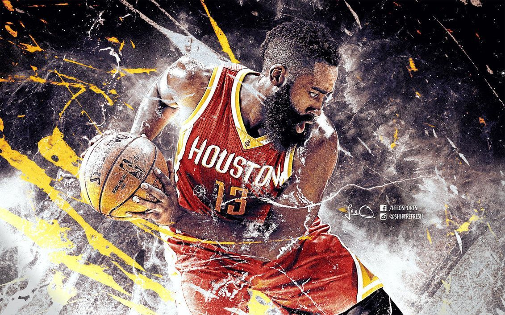

El Campeonato de la División I de Fútbol Americano de la NCAA es la competición más importante de fútbol americano universitario del mundo. Enfrenta a los equipos de la División I de la National Collegiate Athletic Association.
El campeón actual es Alabama y el más laureado es Yale
El campeón se decide en el College Football Championship Game.
 Ir a Inicio
Ir a Inicio
Ir a Reglamento
 Ir a Posiciones de juego
Ir a Posiciones de juego
 Ir a NFL
Ir a NFL